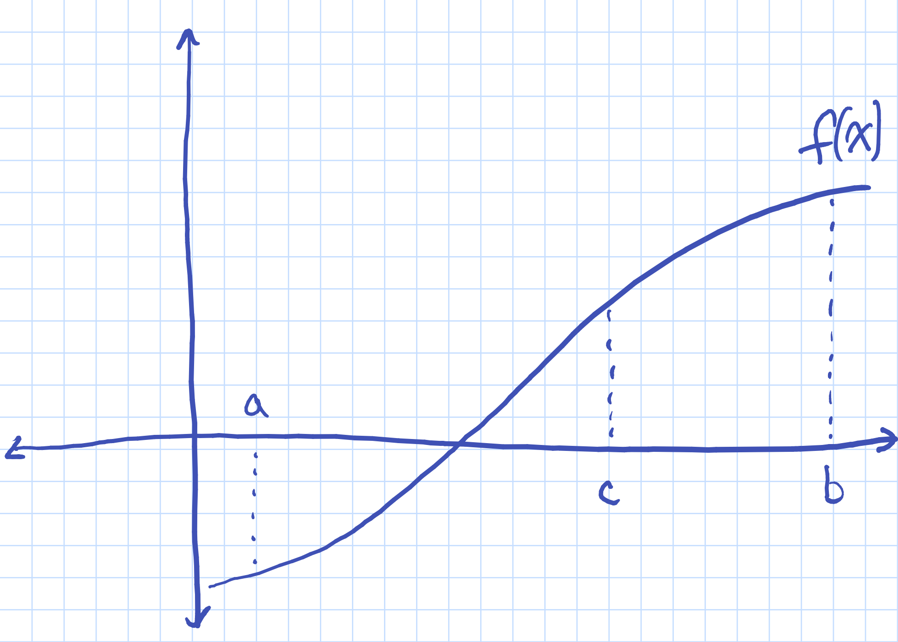
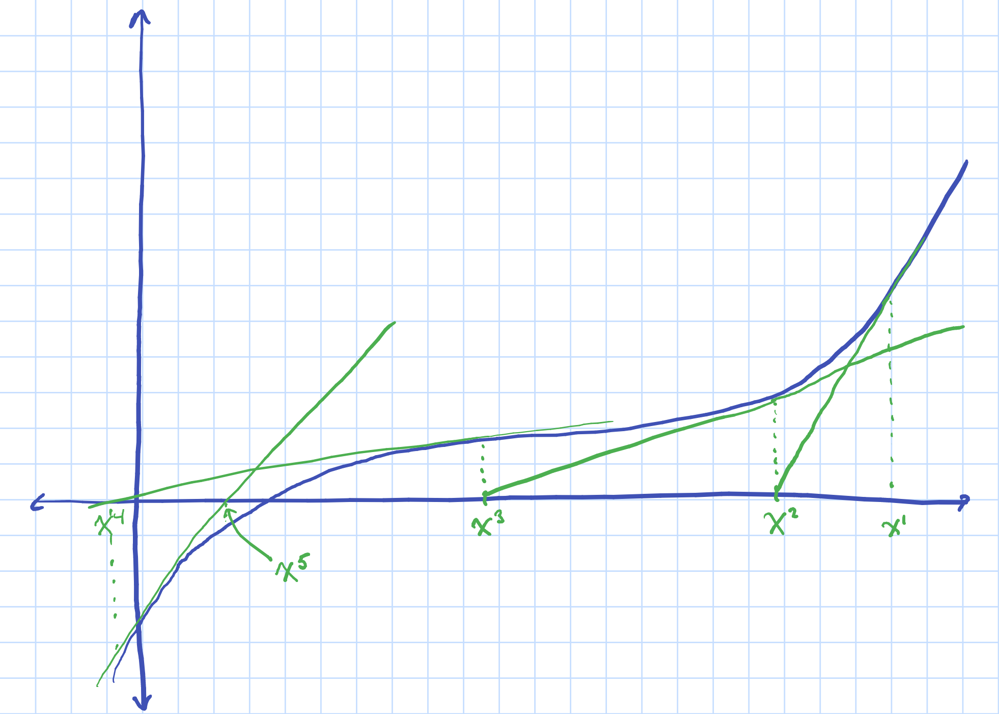

Root Finding and Fixed Points
There are many many examples from economics we seek to either find the root or the fixed point to a non-linear of (often many) equations, which cannot be computed analytically.
- Many estimation algorithms for equilibrium problems involve a nested structure where there is some root-finding problem in the inner nest: BLP, dynamic discrete choice (rust, labor models), prodction function, trade models.
- You may want to simulate a model and find equilibria using neccessary conditions.
- Model where equilibria may be defined by a simple threshold of a non-linear equation.
Contents
Roots
A function  from
from  to is given and one must compute a vector
to is given and one must compute a vector  that satifies:
that satifies:  .
.
Fixed Points
A function  from to is given and one must compute a vector that satifies:
from to is given and one must compute a vector that satifies:  .
.
Notice that these two forms are equivilent:

OR

so we will use the same methods to solve both types of problems.

Examples
- Demand and supply market clearing
- FOCs from an optimization problem (more on this later)
Iterative Methods
We will consider methods that systematically look over the range of until 
Bisection Method
Intermediate Value Theorem: If a continuous real-valued function assumes two distinct values, then it must assume all values in between.
If is continuous and  and
and  have different signs, then there must be at least one root in
have different signs, then there must be at least one root in ![$[a,b]$](roots_eq13003530951257114622.png) .
.
Evaluate at the bisection of  and
and  . Take the new interval to be the bisected interval with endpoints of different signs. Repeat.
. Take the new interval to be the bisected interval with endpoints of different signs. Repeat.
clear close all addpath('~/Dropbox/MATLAB/compecon/CEtools')
Bisection Example
f = @(x) x.^3; a = -6; b = 12; tol = 1e-4; s = sign(f(a)); % sign if the left boundary x = (a+b)/2; % inital midpoint d = (b-a)/2; xsave=[]; while d>tol d=d/2; % length to cut the next interval xsave = [xsave x]; if s == sign(f(x)) x = x+d; else x = x-d; end end xsave = [xsave x]; fprintf('Solution using user written code: %3.9f\n\n\n',x) disp(xsave)
Solution using user written code: -0.000022888
Columns 1 through 7
3.0000 -1.5000 0.7500 -0.3750 0.1875 -0.0938 0.0469
Columns 8 through 14
-0.0234 0.0117 -0.0059 0.0029 -0.0015 0.0007 -0.0004
Columns 15 through 18
0.0002 -0.0001 0.0000 -0.0000
Alternatively, we can use the bisect function from the COMPECON toolbox.
x2 = bisect (f,-6,12); % (function name, a, b) fprintf('Solution using user bisect code: %3.9f\n',x2)
Solution using user bisect code: 0.000183105
Pros and cons of bisection
- Pro: Guaranteed to find a root.
- Con: Slow (no gradient information).
- Con: Will only find one root.
- Con: Only good for single variable functions
- Con: Can be very slow b/c it does not use info on shape of function
Function iteration
- Supply a guess

- Use the updating rule
 .
.
The starting guess must be close to the fixed point where 

Function Iteration Example
From the COMPECON Toolbox:
g = @(x) x.^0.5; xFP1 = fixpoint(g,0.1) % (function name, starting vlaue) xFP2 = fixpoint(g,1.8) % no start from above the FP
xFP1 =
1.0000
xFP2 =
1.0000
Write our own Function Routine
and capture the results graphically
vidfile = VideoWriter('html/testmovie-below.mp4','MPEG-4'); vidfile.FrameRate = 1; open(vidfile); xvalues = 0:.1:2; x_init = 0.1; xtol = 0.001; error = 100; niter=0; while error>xtol && niter<20 niter=niter+1; x_new = g(x_init(end)); error = (x_new - x_init(end)).^2; x_init = [x_init x_new]; f = figure('visible','off'); plot(xvalues,g(xvalues),'LineWidth',2); hold on plot(xvalues,xvalues,'LineWidth',2); hold on plot(x_init,x_init,'*','LineWidth',2) hold off % F(niter) = getframe(gcf); F(niter) = getframe(f); writeVideo(vidfile, F(niter)); end close(vidfile)
Function Interation Example (from above)
vidfile = VideoWriter('html/testmovie-above.mp4','MPEG-4'); vidfile.FrameRate = 1; open(vidfile); xvalues = 0:.1:4; x_init = 3.8; xtol = 0.001; error = 100; niter=0; while error>xtol && niter<20 niter=niter+1; x_new = g(x_init(end)); error = (x_new - x_init(end)).^2; x_init = [x_init x_new]; f = figure('visible','off'); plot(xvalues,g(xvalues),'LineWidth',2); hold on plot(xvalues,xvalues,'LineWidth',2); hold on plot(x_init,x_init,'*','LineWidth',2) hold off % F(niter) = getframe(gcf); F(niter) = getframe(f); writeVideo(vidfile, F(niter)); end close(vidfile)
Newton's Method
- Use derivative information
- Probably most common method.
- Sometimes we know the derivative (pen a paper).
- Sometimes we need to approximate the derivative.
- Same thing goes with second derivatives.
The idea:
- guess a point
- linearize the function around that point
- find the root of the linear function using taylor expansion
- use that point as your new guess and repeat

First-order Taylor approximation: 
which yields the following iteration rule: ![$x^{t+1}\leftarrow x^t - [f'(x^t)]^{-1}f(x^t)$](roots_eq00928085840677755707.png)
- What do you notice about this iterative method?
- We need to know the derivative!
- We will discuss this in detail later.
Convergence: Judd Theorem 2.1 (page 130) -- If  is "sufficiently" close to
is "sufficiently" close to  ,
,  and
and  , then the Newton sequence will converge to . Also, needs to be "smooth."
, then the Newton sequence will converge to . Also, needs to be "smooth."
- Warning: if
 is close to zero, then it can overshoot and cause problems
is close to zero, then it can overshoot and cause problems
Newton Example
Simple demand function in a separate file:
function [q, fjac] = simpleFunc(p) q = -12 + 2*p.^(-3); fjac = -6*p.^(-4); end
xvals = .3:.05:.7; plot(xvals,simpleFunc(xvals)) hold on; plot(xvals,zeros(size(xvals))) hold off;
Set options for the COMPECON function 'newton':
optset('newton','maxit',20);optset('newton','showiters',1);
Now, call the 'newton' routine to find the root of simpleFunc.
[fstar,fval,flag] = newton('simpleFunc',.1)
1 1 8.36e+02
2 1 3.49e+02
3 1 1.44e+02
4 1 5.79e+01
5 1 2.16e+01
6 1 6.78e+00
7 1 1.36e+00
8 1 8.67e-02
9 1 4.13e-04
10 1 9.49e-09
fstar =
0.5503
fval =
9.4909e-09
flag =
0
What happens if we pick a weird starting vlaue?
xvals = 0:.05:.7; plot(xvals,simpleFunc(xvals)) hold on; plot(xvals,zeros(size(xvals))) hold off;
[fstar,fval,flag] = newton('simpleFunc',0)
fstar =
0
fval =
Inf
flag =
2
Quasi-Newton Methods
Many times we do not have an analytical derivative:
- It is difficult to compute analytically.
- Potentially make mistakes in coding.
- In general humans make mistakes.
Quasi-Newton methods are the same as the Newton method, except with an approximation of the jacobian.
Secant Method
Univariate Newton method with Jacobian approximation.
Replace  with an approximation from the last two function values:
with an approximation from the last two function values:

which yields the following update rule:

You are constructing the approximating line through the two points  and
and  .
.
[GRAPH]
Broyden's Method
Multivariate version of the secant method.
- Generate a sequence of vectors
 and matrices
and matrices 
- These approximate the root and Jacobian of
- Guess and
 .
. - is often set to the numerical jacobian at x^0.
 which yields the following rule
which yields the following rule 
The Jacobian is also updated iteratively: ![$A^{t+1} \leftarrow A^t + [f(x^{t+1}) - f(x^t) - A^td^t]\frac{d^t}{d^td^t}$](roots_eq00661369468101077056.png) where
where 
In priactice we will update the inverse of the Jacboian to save an inversion step.
NOTE: The sequence of approximations of the Jacobian DO NOT neccessarily converge to the true Jacobian.
This method will work if you start sufficiently close, and is well behaved...duh!
In priactice, I have used this method and it has worked very well for problems where the Jacobian diagonally dominant.
Newton Methods in Practice.
See Gravity Example
!rm *_eq*.png